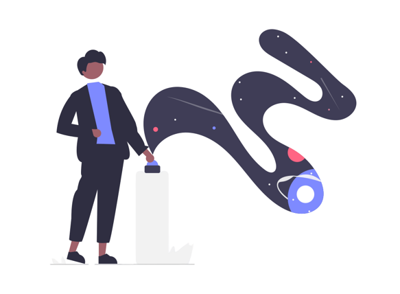

Lua
Único satélite natural da Terra e o quinto maior do Sistema Solar. É o maior satélite natural de um planeta no sistema solar em relação ao tamanho do seu corpo primário, tendo 27% do diâmetro e 60% da densidade da Terra, o que representa ¹⁄₈₁ da sua massa.
maisTecnologia
Ao longo dos últimos anos, foram desenvolvidos diversos instrumentos que auxiliaram os astrônomos a descobrir novas formas de estudar o universo, como câmeras, telescópios cada vez mais modernos, entre outros dispositivos. Mesmo assim, é importante ter em mente que as novas tecnologias e a astronomia passam por um processo de evolução conjunto, que resulta em grandes avanços no conhecimento que temos do universo.
